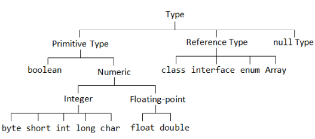

Java : 객체 지향 프로그래밍 언어
Compile & Run
소스코드파일(.java)은 컴파일러(javac.exe)를 통해 컴파일되어 바이트코드파일(.class)이 생성된다. JVM(java.exe)을 통해 실행된다.

Data
| 정수 | Byte | 범위 |
|---|---|---|
| byte | 1 | -2⁷ ~ 2⁷-1 (-128 ~ 127) |
| short | 2 | -2¹⁵ ~ 2¹⁵-1 (-32,768 ~ 32,767) |
| int | 4 | -2³¹ ~ 2³¹-1 (-2,147,483,648 ~ 2,147,483,647) |
| long | 8 | -2⁶³ ~ 2⁶³-1 (-9,223,372,036,854,775,808 ~ 9,223,372,036,854,775,807) |
| 실수 | Byte | 범위 |
| float | 4 | 0x0.000002P-126f ~ 0x1.FFFFFeP+127f |
| double | 8 | 0x0.0000000000001P-1022 ~ 0x1.FFFFFFFFFFFFfP+1023 |
| 문자 | Byte | 범위 |
| char | 2 | 0 ~ 2¹⁶-1 (65,535) 유니코드 \u0000 ~ \uFFFF **unsgined |
| 논리 | Bit | 범위 |
| boolean | 1bit | true / false |
- 정수 는 1bit가 부호정보를 저장하기 때문에 자료형 byte크기에서 1bit를 뺀 수의 제곱으로 표현 범위를 구할 수 있다. 각 타입의 정확한 최대와 최소는 Integer.MIN_VALUE;
- 실수 범위가 왜 저렇게 나오지??
- 문자 자료형 char는 java에서 unsgined로 동작 하므로 부호없이 2byte 모두 uni code로 쓰인다.
- 논리 자료형 boolean은 1bit 이다
Variable
변수란 하나의 값을 저장할 수 있는 메모리 공간이다
Constant
상수는 선언과 동시에 초기화를 해야하며, 이후 변경이 불가하다.
상수를 선언하는 방법 : final int x = 10;
Literal
리터럴은 값 그 자체이다.
정수 리터럴은 기본 int(4byte)이고, long 타입은 뒤에 l 또는 L을 추가
실수 리터럴은 기본 double(8yte)이고, float 타입은 뒤에 f 또는 F를 추가
문자 리터럴은 기본적으로 char(2byte)이고, 문자열 리터럴은 기본적으로 String
Casting
형 변환이란 변수나 리터럴의 타입을 다른 타입으로 변환하는 것이다.
- 묵시적 형 변환 작은타입 → 큰타입으로 변환할 때는 자동으로 형 변환된다.
리터럴은 변수 저장시 해당 변수타입에 저장할 수 있는 범위만 넘지 않으면 자동 형 변환된다. - 명시적 형 변환 큰타입 → 작은타입으로 변환할 때는 ( )로 강제 형 변환 하여야한다.
이때 데이터 손실이나 오버플로우가 발생 할 수 있다. int num10 = (int) 3.14; 이때 0.14 값은 손실된다.
etc
- "H" →1글자지만 String
- System.out.println("Hello \"World\""); →escape
- System.out.println("Hello →줄바꿈 불가능
World"); - System.out.println("Hello " →OK
+ "World"); - "6"+"6" →66
- "6"*"6" →문자열 *연산 불가
- "1111".length(); →문자열 길이는 4
- 1111.length(); →Error
- System.out.println((int) ch1); →char를 int로 형변환하여 유니코드값 출력
- System.out.println(변수.getClass()); →변수의 자료형 출력
Primitive & Reference

- Primitive Type
- 원시자료형, 더이상 쪼개어지지않음
- 8가지 : boolean, byte, short, int, long, char, float, double
- 기본값이 있기 때문에 Null이 존재하지 않는다
- 실제 값을 저장하는 공간으로 스택(Stack) 메모리에 저장
- Reference Type
- 원시자료형을 제외한 모든 타입은 참조자료형, 객체(Object)의 주소를 참조한다.
- Class(String), Interface, Enum, Array
- 빈 객체를 의미하는 Null이 기본값이다
- 힙(Heap)영역에 생성된 객체의 주소값이 스택(Stack)영역에 참조자료형으로 저장된다. 즉 스택에는 참조값만 있고 실제값은 힙에 존재한다
Print & Scanner
- Print
- System.out.println(); 출력 후 개행
- System.out.print(); 개행없이 출력
- System.out.printf(); 변수의 값을 지시자 형식으로 변환하여 출력
- System.out.printf("&.3f", 변수); 소수점 셋째자리까지 출력
- Scanner
- sc.nextInt(); 정수 입력받기
- sc.nextLine(); Enter전까지 입력받은 문자열을 리턴 *엔터버퍼 주의*
- sc.next(); Space전까지 입력받은 문자열을 리턴
- sc.next().charAt(0); 입력받은 문자열중 첫번째 문자만 저장
Operator
산술연산자 (+ - * / %)
사칙연산과 나머지연산
- 정수와 실수의 산술연산
- 5 / 2 = 2
- 5 / 2.0 = 2.5 →실수/실수, 실수/정수, 정수/실수 : 소수점까지 계산
- System.out.println(246/0); →정수 0으로 나누는 것은 불가능하기 때문에 Exception발생
- System.out.println(246/0.0); →실수 0.0으로 나누면 Infinity 왜?? 0.0은 뒤에 소수점땜에 완전한 0이 아닌가?
대입연산자 (=)
오른쪽의 값을 왼쪽의 변수에 저장하는 연산자. 변수 = 값;
복합 대입 연산자 (+= -= *= %=)
증감 연산자 (++ --)
변수의 값을 1 증가 또는 감소할 때 사용하는 연산자. 변수의 앞(prefix)과 뒤(suffix)에 사용 (x++ 또는 --x)
증감 연산자가 단독으로 사용되는 경우 전위 후위 모두 동일한 결과이나, 다른 연산자와 함께 사용되는 경우 차이 발생 섞어쓰지말고 x++만 쓰자
- 전위 후위 연산 비교
- result = num++ + 5; →num + 5가 먼저 실행되고 result에 값을 저장한 뒤, num을 1 증가
- result = ++num + 5; →++num이 먼저 실행되고, num + 5의 값이 result에 저장
- result = num++ + 5 + ++num; →num + 5 연산, num++되어 num에 저장, ++num이 실행, 최종적으로 2증가한 num이 더해짐
비교 연산자 (< > <= >= == !=)
두 값을 범위적으로 비교할 때 사용, 연산 결과로 true, false를 리턴
논리 연산자 (&& || !)
boolean 타입의 변수를 사용하여 연산
- SCE (Short-circuit evaluation : Lazy Evaluation)
- A && B 를 계산할 때 A가 false이면, B를 계산하지 않음 →B는 Dead code
- A || B 를 계산할 때 A가 true이면, B를 계산하지 않음